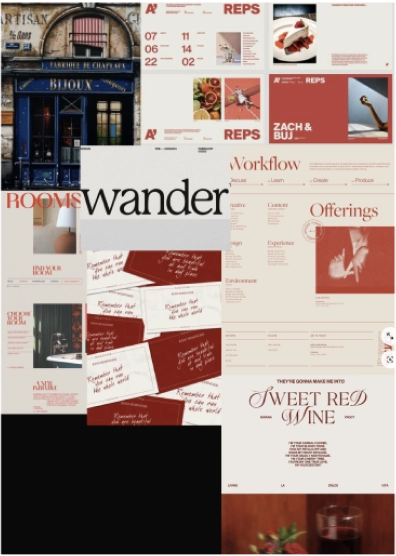
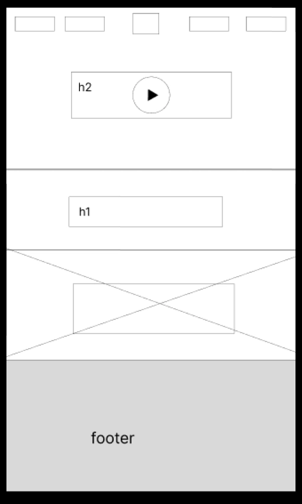
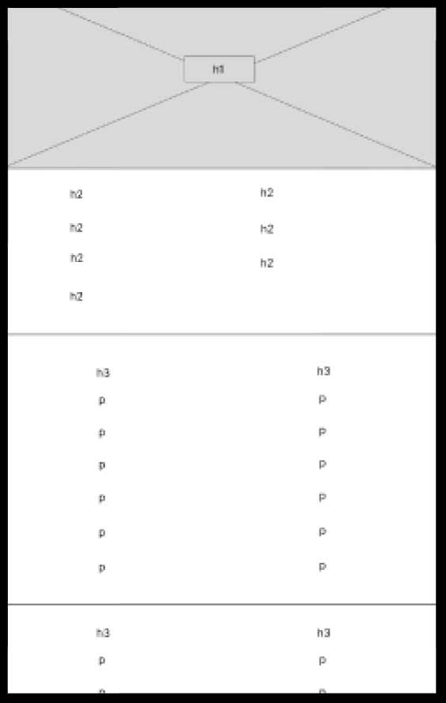
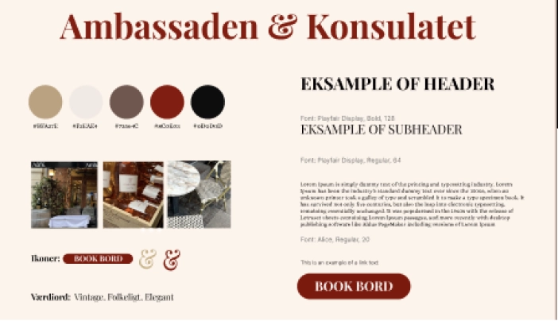

GRUNDLÆG
GENDE
INDHOLD
Grundlæggende Indhold
I Tema 5 blev vi introduceret til indholdsproduktion, og så lærte vi at lave lottiefiles ved hjælp af adobe
after
effects. Det var også første gang vi arbejdede i grupper.
Første del var vi i par, og til den sidste endelige hjemmeside var vi fem personer. Derfor blev vi også
introduceret til
forskellige projektstyringsværktøjer.
Disse værktøjer bestod af SCRUM og Trello, som hjalp med at give overblik over gruppeprojektet, og give
struktur samt
øge effektiviteten.
Opgaven var delt op i to dele: i den første opgave skulle vi lave et passionsite, og i den anden skulle vi
lave et
redesign af en allerede eksisterede hjemmeside for en virksomhed. Første del var der fokus på
videoproduktion.
PASSION SITE
opgave
I opgaven “PASSION SITE” skulle vi vælge en person med en passion, og lave et potræt af denne person og
vedkommens
passion. Min gruppe og jeg valgte at lave den om undertegnet selv, altså mig. Vi valgte at lave en video om
mig og min
passion for tatoveringer. Vi filmede og lavede interviewspørgsmål sammen, men efter dette, blev opgaven
individuel.
Til videoen brugte vi en iPhone, stabaliser og en clip-on mikrofon. Vi optog video og lyd på to forskellige
enheder, for
at sikre bedst mulig lyd, og gøre redigerings arbejdet nemmere. Derudover optog vi også b-rolls, der
fungerede som
stemnings sættende optagelser.
Derefter startede redigerings arbejdet, hvilket vi gjorde i Premiere Pro og Audition.
I mit færdige website anvendte jeg et videotag i html.
VIRKSOM-
HEDS
SITE
Gruppeprojekt
På virksomhedssitet startede vi med at opsætte vores projektstyringsværktøjer. Vi startede vores Trello og
fik etableret
nogle to-do opgaver op, valgte dagens SCRUM master, og så gik vi igang med at lave brainstorm over hvilken
virksomhed vi
skulle vælge. Vi endte med at vælge en restaurant.Vi gik hurtigt i gang med at analysere deres hjemmeside
for at få et
overblik over, hvad vi kunne gøre for at forbedre den. Dette gjorde vi ved at udarbejde et styletile baseret
på deres
hjemmeside samt et sitemap
Derudover fandt vi de vigtigste userstorries, og lavede funktionalitetsliste, som hjalp os med at finde frem
til hvad vi
ville have ekstra fokus på. Vi satte en aftale op med ejerne, om at komme og skyde nogle videoer og billeder
som indhold
til hjemmesiden. Vi fik også fundet frem til målgruppen og virksomhedens foretningskoncept.
PROCES


Processen
Vi startede alle med at lave et moodboard hver, og derefter samle dem, for at finde frem til fælles ønsker
af æstetik.
Vi lavede en opdateret version af stiletyle hvor vi fastlagde en farvepalette, font, og indhold.
Vi lavede alle sammen crazy 8 ud fra forsiden, for at finde frem til, hvordan vi ville have hjemmesiden
skulle starte.
Her landede vi på at have en video-hero som forside, og gik derfor igang med at klippe en stemnings video
sammen på
primere pro, som vi lagde ind som et videotag, hvor vi fik videoen til at køre i loop. Da vi havde videoen
klar startede
vi med at lave lofi og hifi wireframes.



Kodning
For at arbejde effektivt sammen om kodningen, brugte vi GitHub, hvilket gjorde det nemmere at samarbejde om
kodningen.
Vi uddelegerede sider vi hverisær skulle kode, og så begyndte vi på kodningen.